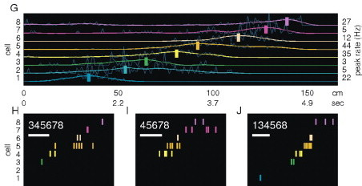

MWL Lab-meeting
January 14, 2014
Greg Hale
Big question: What does replay do?
- Phenomenology
What does replay look like, in wake & during sleep, on short tracks and in open arenas? - Function
Is replay needed for behavior? - Interaction
How does the hippocampus interact with cortex during replay?
This talk doesn't answer the big question, but adds to the picture of how hippocampus and cortex communicate.
Replay Phenomenology
Awake forward and reverse replay

Diba and Buzsaki, 2007. Left and Right: Forward and Reverse replay of place cell sequences. Center: Place fields on track.
Foster and Wilson, 2006. Place cell sequence on track Replayed during pauses, eating.
Remote Replay & Extended Replay

Karlson and Frank, 2009. Rat in Environment A can have replay events of Environment B.
Davidson et. al. 2009. Replay can extend over long (~10m) stretches of track.
Replay in open fields
Pfeiffer and Foster, 2013; Kloosterman and Wilson unpublished. Replay trajectories in open fields. May be some influence of past/future behavior on replayed sequences, but they are probably more "exploratory" than the rat's behavior.
Slow-wave sleep replay
Lee and Wilson, 2002. Brief replay events similar to awake replay (but often not as clean or easy to detect) of past experience occurs during slow wave sleep.
REM sleep replay

Louie and Wilson, 2001. Replay of past experience occurs during REM sleep, can last for over a minute.
Functional Role
Sleep replay disruption and learning

Ego-Stengel and Wilson, 2009. Hippocampal afferent stimulation, locked to sharp-wave ripples (often accompanied by replay), slows spatial learning of the track being replayed.
Awake replay disruption and learning
Jadhav et. at. 2012. Awake replay disruption impairs spatial working-memory performance, doesn't strongly interfere with referenec memory performance.
Hippocampal-cortical interactions
HPC-CTX interaction during quiet wake, slow-wave sleep
Siapas and Wilson 1998. Sharp-wave ripple complexes cooccur with sleep spindles in prefrontal cortex.
Coordination of replay content between hippocampus and cortex during slow-wave sleep
Ji and Wilson, 2007. Cortical spiking during slow-wave sleep is organized into "frames", very different from the tonic firing of awake multi-unit. Hippocampus also spikes in frames during slow-wave sleep. Hippocampal frames on average start ~10ms after cortical frames. Slow-wave sleep hippocampal activity is similar to hippocampal activity during reward - dominated by ripples and replay.
Ji found that neurons in primary visual cortex have spatial correlates and, in slow-wave sleep, replay sequences from earlier behavior.
These sequences tended to mirror what was being simultaneously replayed by the hippocampus (maybe not in a one-to-one fashion).
Hippocampal-Retrosplenial Recordings
Hippocampal-Retrosplenial Recordings
What happens in primary sensory cortex, higher-order cortex during wake replay? Where does replay come from / go to?
How does it relate to hippocampal-cortical interactions of sleep?
Recorded in hippocampus, retrosplenial cortex (spatial), and somatosensory and motor cortex (nonspatial).
Rats were trained to run clockwise, rewarded every 270 degrees of running - occasional large rewards (either wetted rat chow powder, or chocolate syrup)
HPC-CTX interactions during awake replay
Not much published on cortical coordination with replay; often looks like somatosensory & motor ctx above.
Surprisingly, retrosplenial cortex activity changes structure during long stops on the track.
RSC reward activity strongly resembles slow wave sleep
Light SWS

Large reward
RSC reward activity can also resemble deep SWS

Deep SWS
Large reward
Precedent for SWS-like activity during wake
Hippocampal activity during reward resembles SWS
Light SWS
Large reward
(Does awake hippocampal activity have frames? We're looking)
SWS-like activity reported in Parietal cotex of sleep-deprived rats
Somatosensory and parietal cortex (the two recorded) have isolated down states related to sleepiness level.
What causes slow waves in awake RSC?
Drowsiness?
Slow waves during dark and light phases of light cycle.
Track novelty?
Slow waves without large reward in early learning; late in learning with large rewards. Novelty sufficient, not necessary.
Sampling bias?
Large reward slow waves within five seconds - less than small reward stopping time.
Comparing RSC frames in sleep and wake
RSC Frames in SWS and Wake
Light SWS
Deep SWS
Large reward
Frame impact on HPC in SWS and Wake
Light SWS
Deep SWS
Track reward
Hippocampal involvement in slow-wave like activity
Some ripples are time-locked to frames in SWS
HPC Ripples and SWS frames cooccurring on a beavioral timescale (seconds).
Ripple-frame cross correlation. (Ripples measured at peak LFP amplitude. Frames at MUA onset). Behavioral-timescale correlation, with additional sharp peak. These ripples lead frame onset by ~100 ms.
Some ripples are time-locked to frames in Deep SWS
HPC Ripples and SWS frames cooccurring on a beavioral timescale (seconds).
Ripple-frame cross correlation.
Some ripples are time-locked to frames during wake
HPC Ripples and SWS frames cooccurring on a beavioral timescale (seconds).
Ripple-frame cross correlation. Same tendency for ripples to precede frames. Weaker, looser relationship - more sampling needed.
Two behavioral states: wake and sleep
Two processing modes: Online and Slow Wave
Each behavioral state supports both an online and a slow-wave mode.
- Online mode
- HPC theta
- CTX 'Desynchronized'
- Sensory-driven CTX
- Active behavior, REM sleep
- Slow Wave mode
- HPC Ripples
- CTX Slow waves
- Internally driven
- Slow-wave sleep, Slow-wave wake
Next steps
- Cleanly parse wake slow waves into light-like and deep-like?
- Difference in properties of ripples, depending on relationship to frames?
- Difference in properties of replay, depending on relationship to frames?
- Differentiate between sharp-wave asociated and non-sharp-wave ripples in terms of frames.